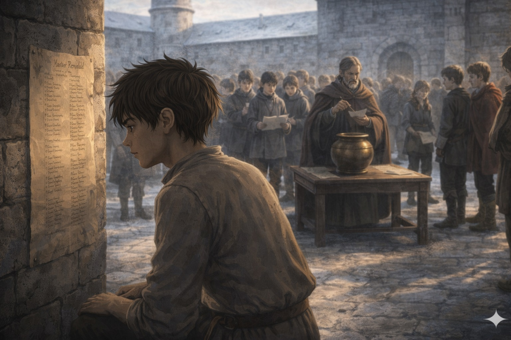
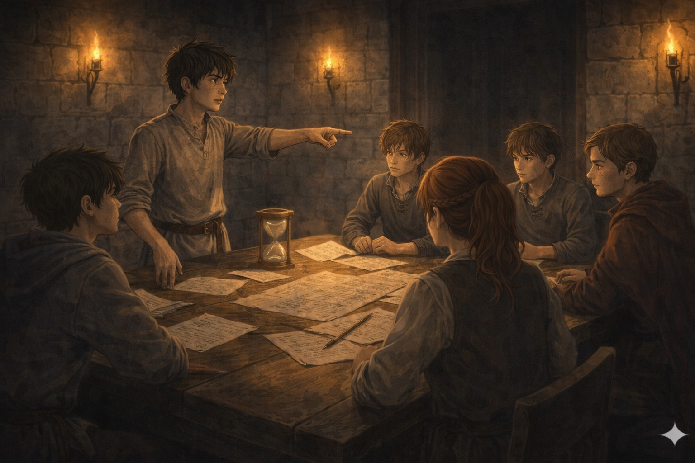
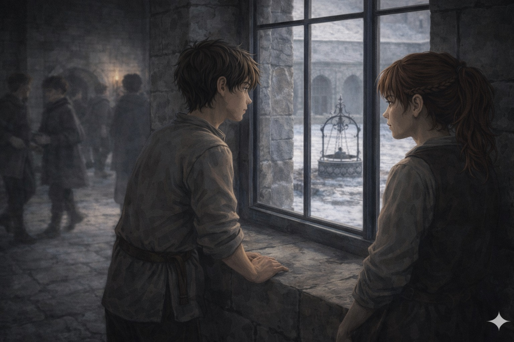
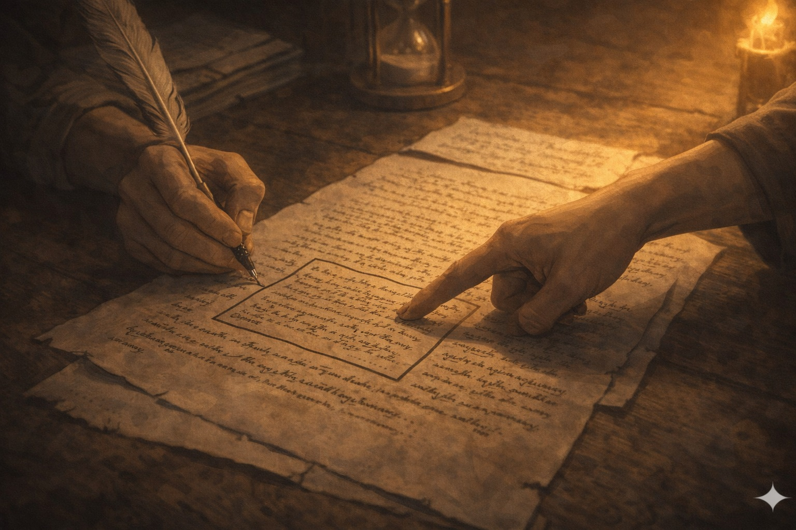

La modification est en bas de la feuille d'annonce, dans une formulation qui a l'air anodine précisément parce qu'elle ne l'est pas :
Résultat du tirage : Réna est dans l'équipe d'en face — avec Daran de Mauren. Il y a quelque chose d'inconfortable dans cette donnée. Lyam prend une seconde pour en identifier la nature précise. Ce n'est pas de la jalousie.
Il regarde Réna. Elle regarde la liste de son équipe comme un problème de topographie. Elle lève les yeux vers lui brièvement. Son expression dit : je sais. C'est correct.

Vingt minutes. Identifier dans un problème fictif le point de bifurcation d'une décision institutionnelle — pas annuler, pas bloquer. Changer l'angle.
Lyam regarde son équipe avant de regarder le problème.
Lyam distribue : «Tu notes et tu structures, tu portes à la fin.» «Tu parles en premier sur le fond.» Personne ne proteste.
Kern identifie la bifurcation non là où elle s'est produite, mais là où elle a été rendue possible — un niveau en amont. Beaucoup plus intéressant.

Dix minutes. Lyam va à la fenêtre — la cour, le puits en fer forgé. Réna vient se mettre à côté de lui. Elle regarde la cour.
«Demande la clarification. Si c'est un piège, c'est un piège qui apprend quelque chose. Et si ce n'est pas un piège, tu gagnes un avantage.» — Lyam
Réna réfléchit deux secondes. Elle dit : «Oui.» Elle repart vers son équipe sans se retourner.

La deuxième épreuve : identifier ce qu'un texte dit, ce qu'il ne dit pas, et ce que la différence entre les deux révèle sur l'intention de celui qui l'a rédigé. Document unique, signé par toute l'équipe.
L'équipe de Réna a demandé la clarification. Réponse du Maître : la signature atteste la participation, pas l'accord. On peut signer en formulant sa dissidence dans le document.
Lyam apprend ça en entendant l'échange de loin. Il reste dix minutes. Il propose à la page juriste d'intégrer sa dissidence sur un point précis.
«Ça peut aussi être lu comme une équipe qui sait ce qu'elle ne sait pas encore.» — Lyam
La page juriste réfléchit. Elle écrit.
Résultat : ex aequo avec l'équipe de Réna. Le jury a distingué deux approches différentes de la même compréhension.